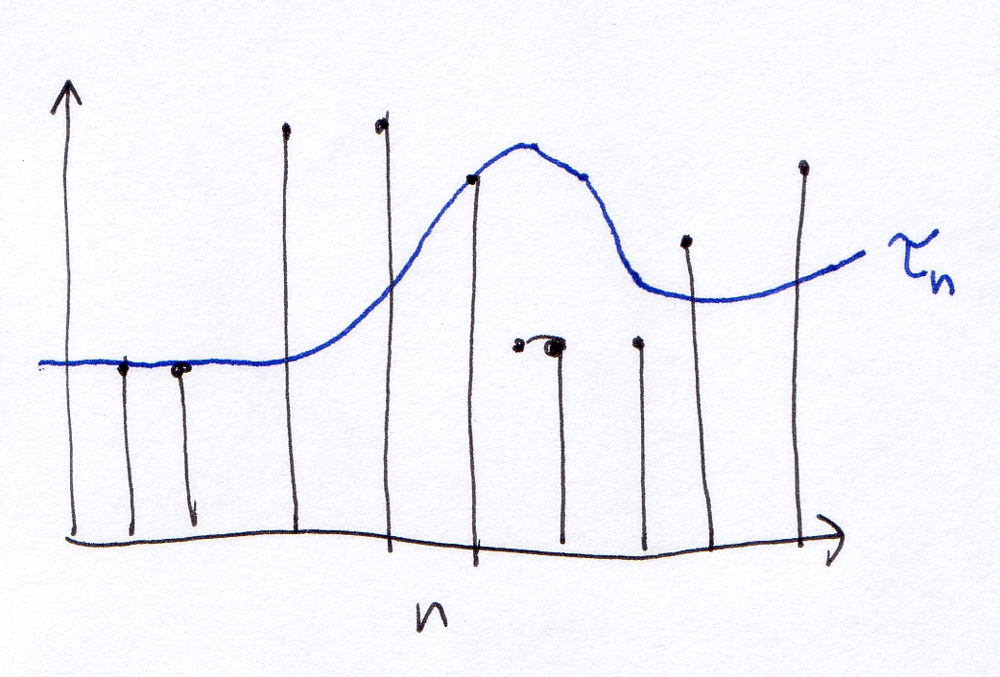

General problem: when to allow kernel threads to run on the CPU(s).
Often referred to as process scheduling,
because traditional processes have a single kernel thread
Most processes (kernel threads running user mode code) utilize the
CPU in short bursts
A burst ends when the process is
suspended to wait for the completion of an I/O request
Preemptive vs. cooperative scheduling
If a process that is currently in the
middle of a CPU burst can be yanked from the CPU and another process
put on the CPU, the scheduling algorithm is preemptive
Requires hardware support, i.e., timer
interrupt
In cooperative scheduling a CPU-bound
process can monopolize the CPU indefinitely
CPU utilization - the percentage of the
the time that the CPU is busy executing a process
Throughput - Rate at which submitted
processes complete
Turnaround time - For a single process
the amount of time between submission and completion
Waiting time - For a single process, the
amount of time spent waiting in the run queue
Response time - Amount of time to respond
(output a response) to user input
An important measure for interactive
processes
In general, no single scheduling algorithm will maximize all of
these criteria
Terminology: whenever you see "process", you should mentally
substitute "kernel thread that is part of a user process".
First, consider the case of non-preemptive algorithms.
Allocate the CPU to kernel threads in the order they arrive.
[Examples are from Siblerschatz, Sect 5.3.1]
E.g.:
Arrival
Process
CPU Burst Length
1
P1
24 ms
2
P2
3 ms
3
P3
3 ms
Resulting schedule:
The average waiting time is (0 + 24 + 27) / 3 = 17
Waiting time is minimized if the kernel threads with shorter CPU
bursts run first:
E.g.:
Arrival
Process
CPU Burst Length
1
P2
3 ms
2
P3
3 ms
3
P1
24 ms
Now the waiting time is (0 + 3 + 6) / 3 = 3
We can use this idea to construct a better algorithm.
Give the CPU to the process that will have the shortest CPU burst
length.
This results in provably optimal walting time. By always
scheduling the process that will run for the least amount of time,
overall waiting time is minimized.
This is an idealized scheduling algorithm: there is really no way of
knowing in advance how long a process will utilize the CPU for before
waiting on I/O.
We can estimate the length of the next CPU burst for a process based
on the past behavior of the process.
A process's CPU bursts can be considered a sequence t1,
t2, t3, ...
Let τn be the predicted CPU burst length for time
n. One way
to compute τn is as a weighted exponential average of past
values of t.
Choose a constant α less than 1. To compute τn+1, we can use the formula
τn+1 = α tn + (1 - α) τn
(1 - α) is the decay factor:
it represents how quickly or slowly past measurements are disregarded
as an indicator of future behavior. A typical value of α might be
.5. The result is that the predictions τn form a
smooth curve out of the samples of CPU burst size.
[Silberschatz, pg 161, Figure 5.3]

In a preemptive scheduling algorithm, the OS kernel can remove a
kernel thread from the CPU and choose another one to replace it at any
time.
In the preemptive form of SJF, if a process entering the ready state has a shorter next CPU burst length than any process either running or ready, it is scheduled immediately.
This is the general term for assigning priorities to
processes. Each time a scheduling decision is made, the process
with the highest priority is chosen.
The question is how to assign priorities to processes.
Lots of ways. In static priority scheduling, each process is
assigned a priority when it is created and the priorities never change.
How to choose the priority?
SJF: process with shortest estimated next CPU burst τn+1 has the highest priority
Starvation: high priority processes can completely monopolize the
CPU, never allowing low-priority processes to run.
One solution: aging. As processes
sit in the run queue (ready state), they gradually increase in priority.
Like FCFS, but preemptive. Processes are assigned fixed time
slices. The amount of time allocated for a single time slice is
the scheduling quantum.
Example: say there are three processes that need to run:
Process Burst size
P1 24
P2 3
P3 3
Assume quantum of 10 ms. Scheduling looks like this:
Total amount of waiting: (0 + 10 + 13 + 6) = 29. Average
waiting time is 9.66 ms.
Because there is some overhead associated with a context switch, the
choice of quantum will affect how much overall CPU time can be utilized
by useful work (processes). Larger quantum means less context
switch overhead. However, too large a quantum affects
interactivity.
Talk about assignment 4.